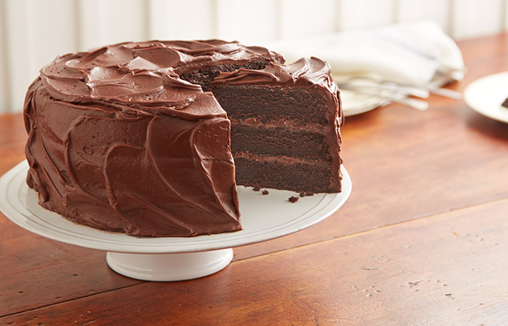

Choclate Cake

Time:
Prep time:30 mins
Cooking time:50 mins
10 servings
Ingredients
- 2 cups sugar
- 1-3/4 cups all-purpose flour
- 3/4 cup HERSHEY'S Cocoa
- 1-1/2 teaspoons baking powder
- 1-1/2 teaspoons baking soda
- 1 teaspoon salt
- 2 eggs
- 1 cup milk
- 1/2 cup vegetable oil
- 2 teaspoons vanilla extract
- 1 cup boiling water
Directions
- Heat oven to 350°F. Grease and flour two 9-inch round baking pans.
- Stir together sugar, flour, cocoa, baking powder, baking soda and salt in large bowl. Add eggs, milk, oil and vanilla; beat on medium speed of mixer 2 minutes. Stir in boiling water (batter will be thin). Pour batter into prepared pans.
- Bake 30 to 35 minutes or until wooden pick inserted in center comes out clean. Cool 10 minutes; remove from pans to wire racks. Cool completely. Frost with "PERFECTLY CHOCOLATE" CHOCOLATE FROSTING. Makes 12 servings.
VARIATIONS:
- ONE-PAN CAKE: Grease and flour 13x9x2-inch baking pan. Heat oven to 350° F. Pour batter into prepared pan. Bake 35 to 40 minutes. Cool completely. Frost.
- THREE LAYER CAKE: Grease and flour three 8-inch round baking pans. Heat oven to 350°F. Pour batter into prepared pans. Bake 30 to 35 minutes. Cool 10 minutes; remove from pans to wire racks. Cool completely. Frost.
- BUNDT CAKE: Grease and flour 12-cup fluted tube pan. Heat oven to 350°F. Pour batter into prepared pan. Bake 50 to 55 minutes. Cool 15 minutes; remove from pan to wire rack. Cool completely. Frost.
- CUPCAKES: Line muffin cups (2-1/2 inches in diameter) with paper bake cups. Heat oven to 350°F. Fill cups 2/3 full with batter. Bake 22 to 25 minutes. Cool completely. Frost. About 30 cupcakes.
CHOCOLATE FROSTING
- 1/2 cup (1 stick) butter or margarine
- 2/3 cup HERSHEY'S Cocoa
- 3 cups powdered sugar
- 1/3 cup milk
- 1 teaspoon vanilla extract
Melt butter. Stir in cocoa. Alternately add powdered sugar and milk, beating to spreading consistency.
Add small amount additional milk, if needed. Stir in vanilla. About 2 cups frosting
HTML Validated